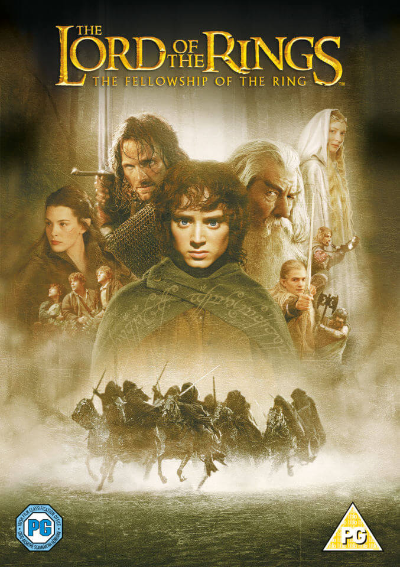

The Lord of the Rings: The Fellowship of the Ring is het eerste deel van Peter Jacksons filmtrilogie The Lord of the Rings, gebaseerd op J.R.R. Tolkiens gelijknamige bestseller. De film was in 2002 genomineerd voor dertien Oscars en won er uiteindelijk vier.
Regisseurs

Peter Jackson
Cast
Elijah wood
Sean Astin
Orlando Bloom
Billy Boyd
Sean Bean
Cate Blanchett
Ian McKellen
Extra Information
De film ging op 19 december 2001 in première. Na The Fellowship of the Ring volgden The Two Towers (2002) en The Return of the King (2003). Deze films waren gelijktijdig met The Fellowship of the Ring opgenomen.